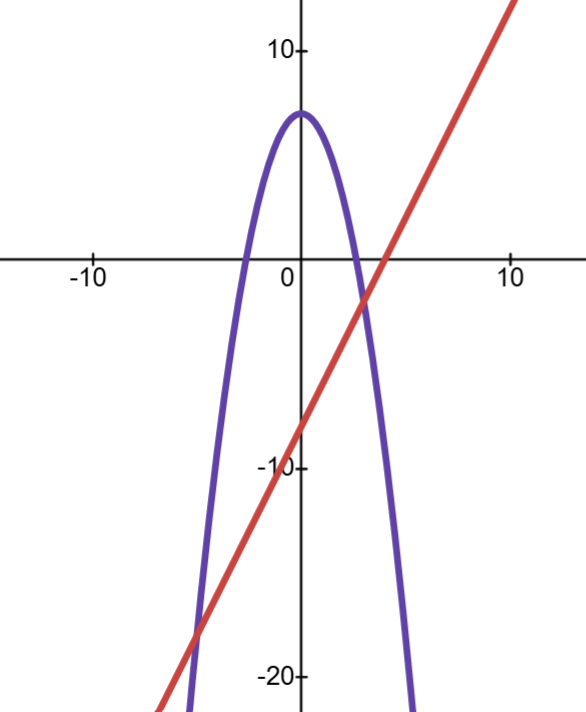

Solution:
📌 Part (i): Sketching the graphs
Step 1: Analyze f(x) = 7 − x²
This is a quadratic function (parabola).
We can rewrite as f(x) = −x² + 7 where a = −1, b = 0, c = 7
Key features:
• Shape: ∩-shaped parabola (opens downward, negative x² coefficient)
• y-intercept: When x = 0, y = 7 − 0² = 7
Point: (0, 7)
• x-intercepts: When y = 0, 0 = 7 − x² → x² = 7 → x = ±√7 ≈ ±2.65
Points: (−2.65, 0) and (2.65, 0)
• Vertex: Using x = −
b
2a
where a = −1, b = 0, c = 7
x = −
0
2(−1)
= 0
Substitute back: y = 7 − (0)² = 7
Vertex (maximum point): (0, 7)
Identify key features to sketch the parabola
Step 2: Analyze g(x) = 2x − 8
This is a linear function (straight line).
Key features:
• y-intercept: When x = 0, y = 2(0) − 8 = −8
Point: (0, −8)
• x-intercept: When y = 0, 0 = 2x − 8 → x = 4
Point: (4, 0)
Find the intercepts to sketch the line
Graphs of f(x) = 7 − x² and g(x) = 2x − 8

The parabola (opening downward) and line are plotted on the same axes showing their intersection points
📌 Part (ii): Finding the points of intersection
Step 3: Set the functions equal
At the intersection points, f(x) = g(x)
7 − x² = 2x − 8
The intersection occurs where both functions have the same value
Step 4: Rearrange to standard form
7 − x² = 2x − 8
−x² − 2x + 7 + 8 = 0
−x² − 2x + 15 = 0
Multiply by −1 to make the x² coefficient positive:
x² + 2x − 15 = 0
Rearrange to solve the quadratic equation
Step 5: Factorize the quadratic
We need two numbers that multiply to −15 and add to +2
These numbers are +5 and −3
x² + 2x − 15 = 0
(x + 5)(x − 3) = 0
Factor by finding the correct pair of numbers
Step 6: Solve for x
(x + 5)(x − 3) = 0
x + 5 = 0 → x = −5
x − 3 = 0 → x = 3
Set each factor to zero
Step 7: Find the y-coordinates
Substitute each x-value into either function:
For x = −5:
g(−5) = 2(−5) − 8 = −10 − 8 = −18
Point: (−5, −18)
For x = 3:
g(3) = 2(3) − 8 = 6 − 8 = −2
Point: (3, −2)
Note: You can use either f(x) or g(x) to find the y-coordinate; both will give the same result at the intersection points.
Substitute the x-values into one of the functions
Part (ii) result: Points of intersection are (−5, −18) and (3, −2)
📌 Part (iii): Solving the inequality f(x) ≤ g(x)
Step 8: Rearrange the inequality
We need to find where f(x) ≤ g(x)
7 − x² ≤ 2x − 8
−x² − 2x + 7 + 8 ≤ 0
−x² − 2x + 15 ≤ 0
Multiply by −1 (remember to flip the inequality sign):
x² + 2x − 15 ≥ 0
From Step 5, this factors as (x + 5)(x − 3) ≥ 0
The critical values are x = −5 and x = 3
Since the inequality is ≥ 0 (greater than or equal to zero), the solution is OUTSIDE the critical values.
Refer to Section 3E for Sign Rule of Quadratic Inequalities
Therefore: x ≤ −5 or x ≥ 3
Part (iii) result: x ≤ −5 or x ≥ 3
✨ Final Answer:
(i) Graphs sketched (see above)
(ii) Points of intersection: (−5, −18) and (3, −2)
(iii) x ≤ −5 or x ≥ 3 ✨